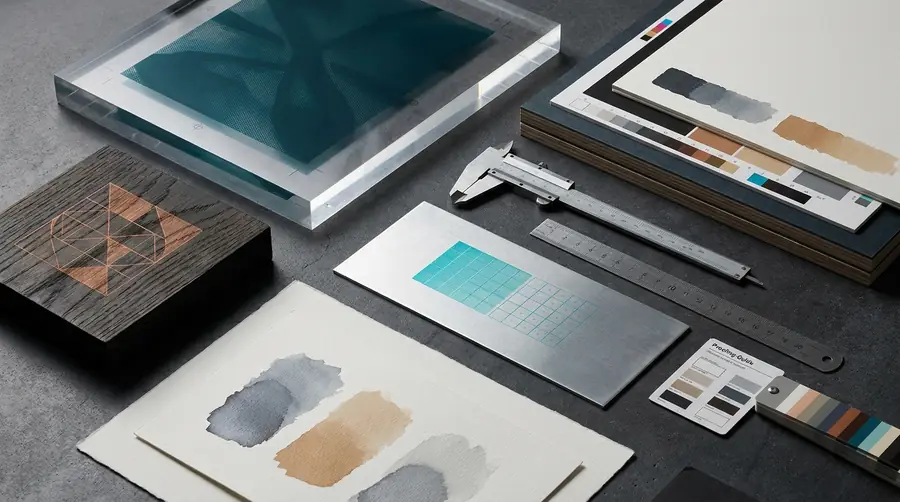
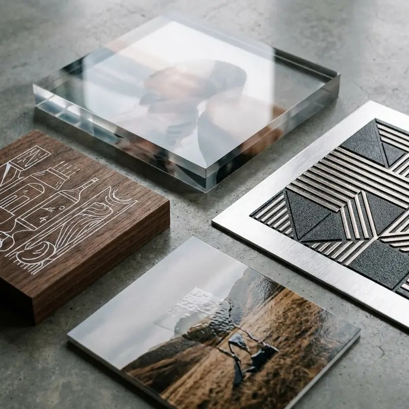
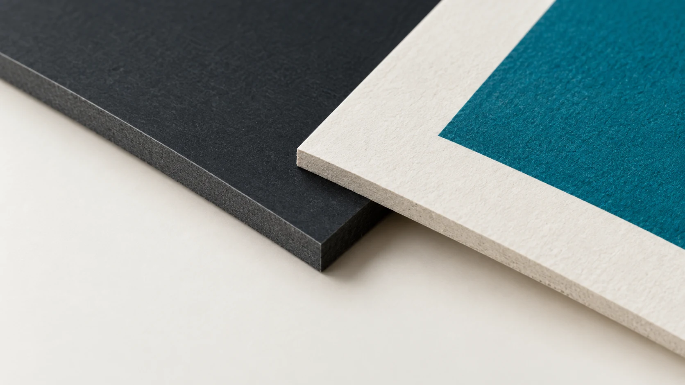

PROCESS ARCHITECTURE
Production
Methods
How the physical job becomes a production route. Surface, geometry, artwork readiness, production run and intended handling define the method.
BEFORE THE MACHINE
The route is earned by the job.
Production selection begins with the physical conditions of the work. A method is considered only after the substrate, geometry, artwork, quantity and intended handling are understood.
01 / SURFACE — Confirm the substrate or finished surface before selecting a production method.
HOW THE WORK IS MADE
Four primary production territories.
Choose the closest production family. The active record below reveals the validated method description, surface context, review factors and dedicated machine guide.
Loading production record…
PHYSICAL PROOF
The process is visible at the edge.
Production quality is assessed through physical evidence: registration, deposition or transfer behaviour, substrate response, finish and the way the completed print is expected to be handled.



DETERMINE THE ROUTE
Start with the physical job.
Share the application, quantity, dimensions, surface or substrate, and artwork readiness. HDC will review the production route against the actual job.